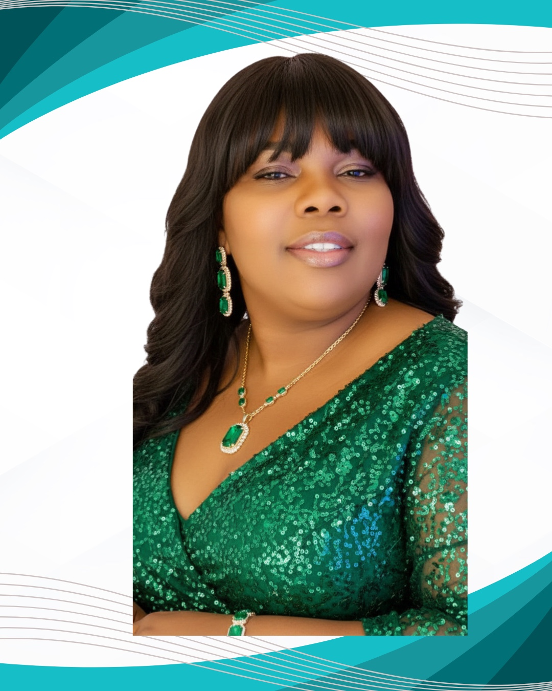
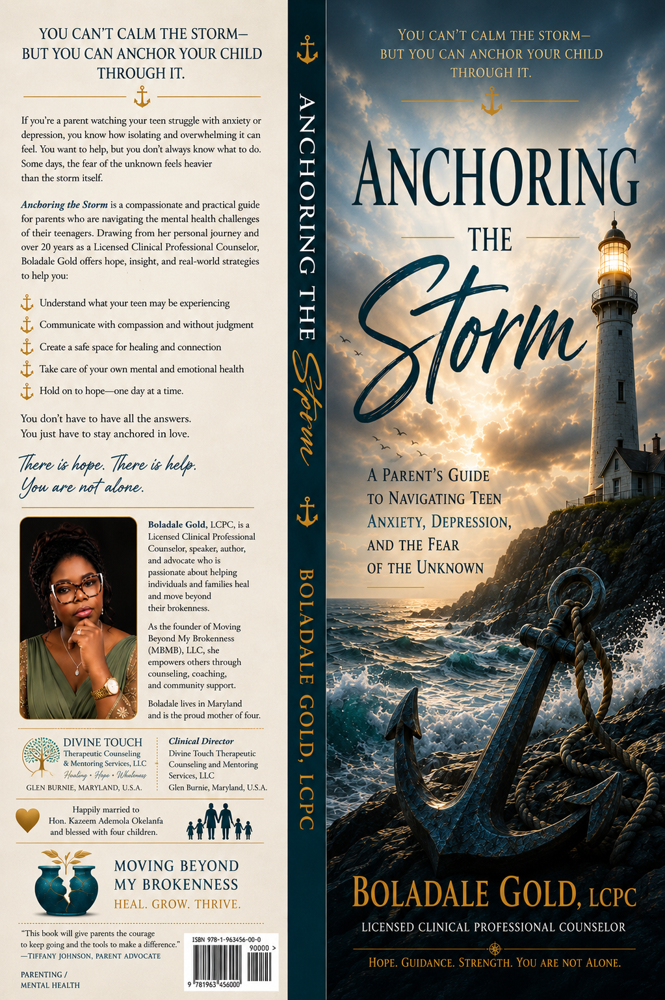

Clinical Care
Evidence-based, compassionate counseling for eligible Maryland residents through Divine Touch Therapeutic Counseling & Mentoring Services, LLC.
Visit Divine Touch →I help individuals and families understand what hurt them, reclaim who they are, and move forward with clinical insight, compassionate truth, and faith.
“For God has not given us a spirit of fear, but of power and of love and of a sound mind.” — 2 Timothy 1:7

Boladale Gold is a Licensed Clinical Professional Counselor, author, speaker, and faith-centered healing voice whose work lives at the meaningful intersection of psychology, lived experience, and faith.
She earned a Bachelor of Arts in Sociology in 2008 and a Master of Arts in Counseling Psychology in 2012 from Bowie State University, and is a lifetime member of the Alpha Chi Honor Society. Her clinical journey has included service with adolescents in residential treatment, vulnerable families, and individuals navigating trauma, anxiety, depression, relationships, life transitions, and occupational stress.
In 2018, she founded Divine Touch Therapeutic Counseling & Mentoring Services, LLC in Glen Burnie, Maryland. She also founded Moving Beyond My Brokenness International, a faith-centered platform helping people release shame, interrupt generational pain, and move toward wholeness.
A devoted mother of four and stepmother of two, Boladale brings professional knowledge, spiritual conviction, and the tenderness of lived experience to every room she enters.
Whether you are seeking licensed clinical care, faith-centered teaching, or a transformational voice for your event, each pathway is designed with clarity and purpose.
Evidence-based, compassionate counseling for eligible Maryland residents through Divine Touch Therapeutic Counseling & Mentoring Services, LLC.
Visit Divine Touch →
02Faith-centered livestreams, teachings, and community through Moving Beyond My Brokenness International—helping people move from surviving to becoming whole.
Explore MBMB on YouTube →Accessible, psychologically informed, faith-grounded teaching for churches, women’s gatherings, parenting communities, conferences, and professional audiences.
Explore Speaking →
Anchoring the Storm blends a parent’s lived journey with clinically informed wisdom and faith-centered encouragement. It is written for the parent who loves deeply, worries quietly, and needs practical support while helping a struggling child.
The companion workbook offers guided reflections, practical exercises, communication prompts, and space to process the journey one week at a time.
With more than 14 years of behavioral-health experience and a gift for making complex psychological truths understandable, Boladale serves both professional and faith-centered audiences.
Request Speaking InformationA compassionate roadmap for understanding pain, releasing shame, and rebuilding a life that is no longer controlled by what happened.
A bridge between faith communities and mental-health care that confronts stigma without dismissing spiritual conviction.
How untreated parental pain affects children—and how healing one generation can transform the generations that follow.
Practical and faith-centered tools for maintaining emotional stability, identity, and hope through family crisis and uncertainty.
Join Boladale Gold for faith-centered conversations, practical psychological insight, and honest encouragement—or catch up whenever you need a word of hope.
Clinical insight, faith, parenting wisdom, and honest conversations for people who are ready to move forward.
Learning to hear what they may not know how to say.
Read the full article →Listening beneath the behavior with curiosity instead of shame.
Reclaiming identity after pain has tried to rename you.
For clinical services, contact Divine Touch directly. For speaking, media, book, ministry, or collaboration inquiries, email the office and identify the purpose of your message.
Please do not include confidential health information in general email. This inbox is not monitored for emergencies.